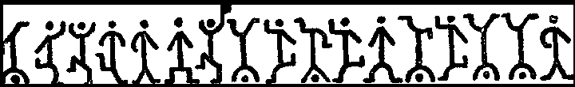

| Развитие шифров | Изобретения | Немного о... | На главную..>>|
В художественной литературе классическим примером шифра замены является известный шифр «Пляшущие человечки» (К. Дойля). Различные варианты:

Пляшущие человечки:
Буквы заменены на символические фигурки людей
Например
ПРИХОДИ НЕМЕДЛЕННО
«Цель изобретателя этой системы заключалась, очевидно, в том, чтобы скрыть, что эти значки являются письменами,
и выдать их за детские рисунки» (Ш.Холмс)